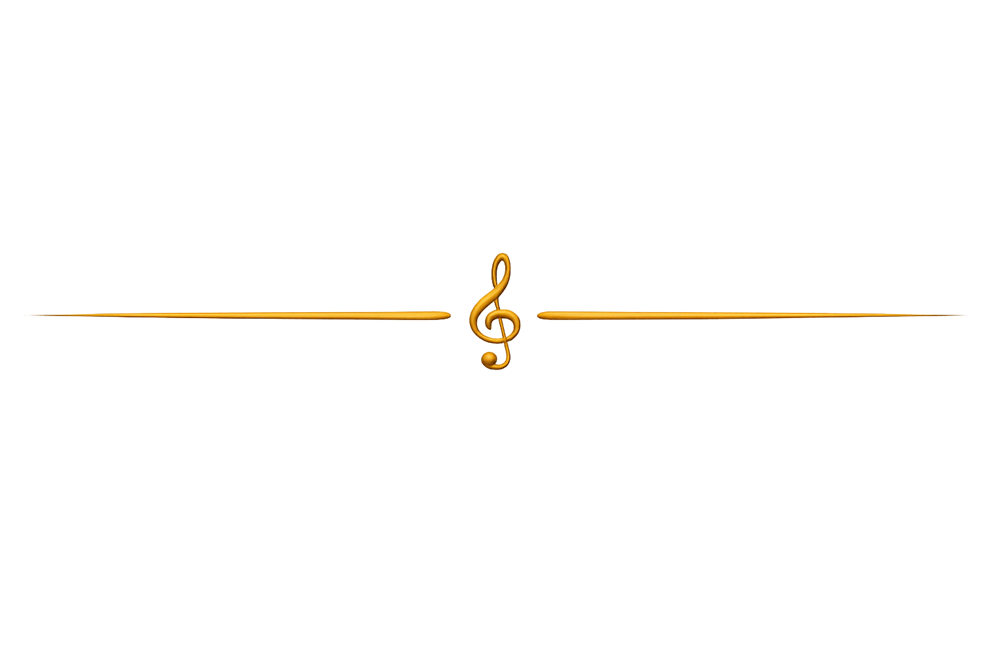
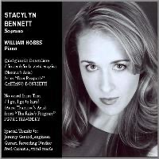
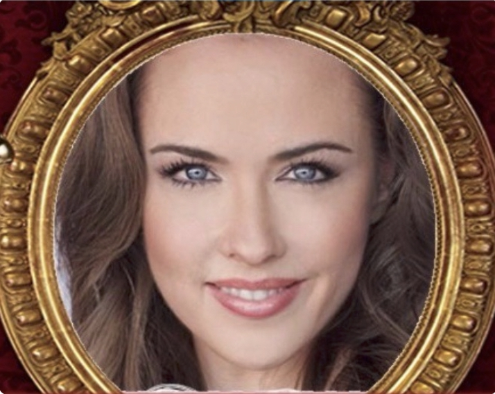
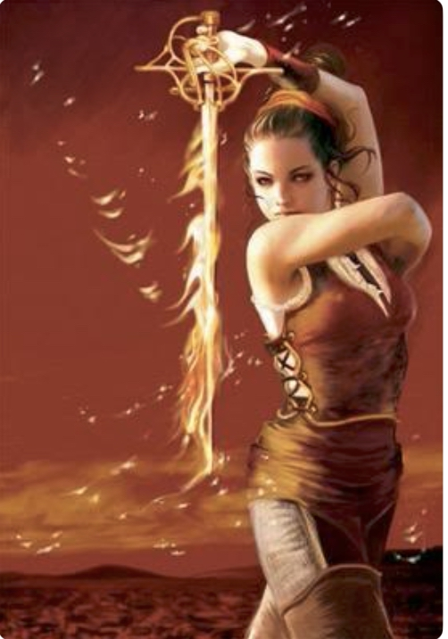
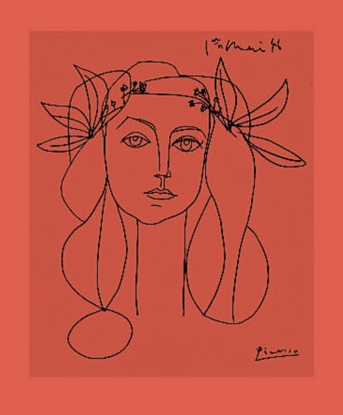

STACYLYN BENNETT-BURNETT

CONCERTS
A Life in Music, Beyond the Stage
Listen to My Music

Dulcissima - from Carl Orff's cantata Carmina Burana

Never Enough (Opera cover) - from the film The Greatest Showman
Depuis le jour - from the opera Louise by Gustave Charpentier
No Word from Tom — from the opera The Rake's Progress by Igor Stravinsky

The Fire Aria - from the opera L'enfant et les sortilèges by Maurice Ravel

The Fire Aria - from the opera L'enfant et les sortilèges by Maurice Ravel
Concert Photographs
Moments from the Concert Stage